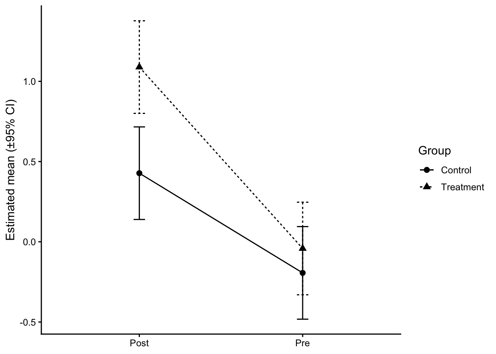
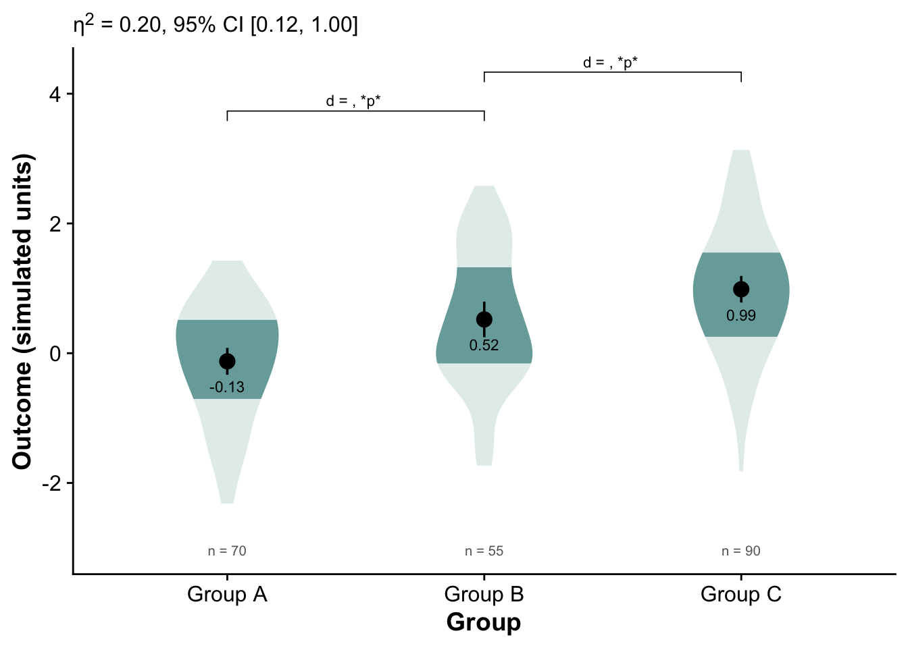
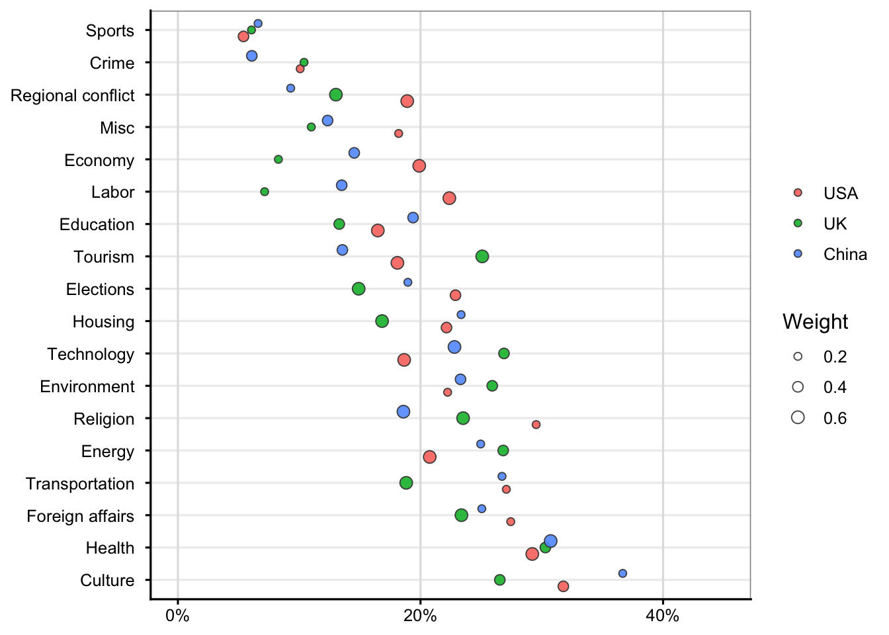

When to use: You want the magnitude of difference foregrounded (mean/median diff, Cohen’s d, Hedges’ g).
Avoid when: Non-continuous outcomes that need different effect metrics.
Shows: Raw data plus a difference-axis with a bootstrap CI.
Common mistakes: Mixing SE and CI; not labeling contrast direction.
Code
# 0) Attach dabestr so its S3 plot method is registeredlibrary(dabestr)# (optional) avoid 'load' name conflict once and for all# library(conflicted); conflicts_prefer(dabestr::load)# 1) Prepare objectd_obj <-load( df_groups,x = group,y = score,idx =c("Control","Treatment"))# 2) Effect sizees <-mean_diff(d_obj)# (optional) sanity check — should include "dabest_effsize"print(class(es))# 3) Plot using the S3 method (not dabest_plot)graphics::plot( es,float_contrast =TRUE,rawplot.ylabel ="Outcome",effsize.ylabel ="Mean difference")
This figure has two panels in one view:
Left panel (raw data + group summaries):
Each dot = one observation (individual data point).
The bars (or shaded rectangles) = mean of each group (Control and Treatment).
The short vertical line within each bar = 95% confidence interval of that mean.
You can instantly see the spread and overlap between groups.
Right panel (difference axis):
This is the effect size panel. It shows the mean difference (Treatment − Control) as a single black dot.
The orange density curve shows the bootstrap sampling distribution of the mean difference.
The horizontal black line through that distribution = the 95% bootstrap confidence interval.
The small orange text “+0.36” next to the dot indicates the observed mean difference (Treatment mean − Control mean).
8 Level 6 — Model-based estimates (EMMs with 95% CI)
When to use: You adjusted for covariates or fit a mixed model; you want adjusted group means and interaction summaries.
Avoid when: You’re only describing raw data and no model is fit.
Shows: Estimated marginal means with CIs; simple effects/contrasts.
Common mistakes: Plotting raw means after fitting an adjusted model; unlabeled CIs.
Code
# Synthetic group factor layered onto paired dataset.seed(7)df_paired2 <- df_paired |>mutate(group =rep(rep(c("Control","Treatment"), each = n_subj/2), each =2),score = score +if_else(group=="Treatment"& time=="Post", 0.4, 0))m2 <- lme4::lmer(score ~ group * time + (1|id), data = df_paired2)emm_gt <- emmeans::emmeans(m2, ~ group * time)emm_df <-as.data.frame(emm_gt)ggplot(emm_df, aes(x = time, y = emmean, group = group, shape = group, linetype = group)) +geom_line() +geom_point(size =2.5) +geom_errorbar(aes(ymin = lower.CL, ymax = upper.CL), width =0.07) +labs(x =NULL, y ="Estimated mean (±95% CI)", shape ="Group", linetype ="Group")

9 A more advanced example of violin plot for 3-group comparison
Code
# ---- Packages ----# install.packages(c("tidyverse","ggdist","cowplot","emmeans","effectsize","ggpubr","ggtext"))library(tidyverse)library(ggdist) # density slabs (for violin-like "slab" with shaded quantiles)library(cowplot) # clean themelibrary(emmeans) # EMMs and pairwise contrastslibrary(effectsize) # effect sizes (eta2, Cohen's d)library(ggpubr) # brackets + labelslibrary(ggtext) # markdown in subtitlesset.seed(101)# ==========================================================# 1) SIMULATE DATA (3 "groups", imbalanced n to feel realistic)# ==========================================================n <-c(70, 55, 90) # group sizesgrp <-rep(c("Group A","Group B","Group C"), times = n)# true means and sdmu <-c(0.0, 0.45, 1.00)sdv <-c(1.0, 1.0, 1.0)y <-c(rnorm(n[1], mu[1], sdv[1]),rnorm(n[2], mu[2], sdv[2]),rnorm(n[3], mu[3], sdv[3]))df <-tibble(group =factor(grp, levels =c("Group A","Group B","Group C")),score = y)# optional second factor for later extensions:# df$cond <- sample(c("Pre","Post"), nrow(df), replace = TRUE)# ==========================================================# 2) SUMMARY TABLE (mean, SE, CI, quartiles, etc.)# ==========================================================summary_df <- df %>%group_by(group) %>%summarise(mean =mean(score),sd =sd(score),se = sd/sqrt(n()),n = dplyr::n(),q25 =quantile(score, .25),q50 =median(score),q75 =quantile(score, .75),loci = mean -1.96*se,upci = mean +1.96*se,.groups ="drop" )# ==========================================================# 3) ONE-WAY ANOVA + EFFECT SIZE (eta^2) + EMMs# ==========================================================fit <-aov(score ~ group, data = df)anova_tbl <- broom::tidy(fit)# partial eta^2 (for one-way, equals eta^2)eta <- effectsize::eta_squared(fit, partial =FALSE, ci =0.95)# extract eta for texteta_txt <-sprintf("η<sup>2</sup> = %.2f, 95%% CI [%.2f, %.2f]", eta$Eta2[1], eta$CI_low[1], eta$CI_high[1])# EMMs and pairwise contrastsemm <- emmeans::emmeans(fit, ~ group)pairs <-pairs(emm, adjust ="tukey") # or "none"/"bonferroni" as you likepairs_df <-as.data.frame(pairs)# Cohen's d for each pair (pooled SD; uses model sigma by default)d_pairs <-as.data.frame(emmeans::eff_size(emm, sigma =sigma(fit), edf =df.residual(fit),method ="pairwise"))# merge p values & dpairs_df <- pairs_df %>%left_join( d_pairs %>%select(contrast, effect.size, lower.CL, upper.CL, SE =any_of("SE.d")),by ="contrast" ) %>%rename(d = effect.size,d_lo = lower.CL,d_hi = upper.CL )# quick helper to format p nicelyfmt_p <-function(p) ifelse(p < .001, "< .001",ifelse(p < .01, paste0("= ", sprintf("%.3f", p)),paste0("= ", sprintf("%.2f", p))))# pick two brackets to annotate (edit as you wish)# contrasts come out in alphabetical order; check with `pairs_df$contrast`pairs_df$contrast
[1] "Group A - Group B" "Group A - Group C" "Group B - Group C"
Code
# e.g., "Group B - Group A", "Group C - Group A", "Group C - Group B"lab_BvsA <-paste0("d = ", sprintf("%.2f", pairs_df$d[pairs_df$contrast=="Group B - Group A"]),", *p* ", fmt_p(pairs_df$p.value[pairs_df$contrast=="Group B - Group A"]))lab_CvsB <-paste0("d = ", sprintf("%.2f", pairs_df$d[pairs_df$contrast=="Group C - Group B"]),", *p* ", fmt_p(pairs_df$p.value[pairs_df$contrast=="Group C - Group B"]))# ==========================================================# 4) ADVANCED VIOLIN (DENSITY SLAB) + EMM SUMMARY + BRACKETS# ==========================================================# Palettepal <-c("#78AAA9", "#FFDB6E", "#E09CB4")p <-ggplot(df, aes(x = group, y = score)) + cowplot::theme_half_open() + ggdist::stat_slab(side ="both",aes(fill_ramp =after_stat(level)), # updated syntaxfill = pal[1],.width =c(.50, 1),scale = .4 ) +geom_pointrange(data = summary_df,aes(x = group, y = mean, ymin = loci, ymax = upci),inherit.aes =FALSE ) +geom_text(data = summary_df,aes(x = group, y = mean, label =sprintf("%.2f", mean)),vjust =2.8, size =3, color ="black" ) +geom_text(data = summary_df,aes(label =paste0("n = ", n),y =min(mean) -3*mean(sd) ),size =2.7, color ="grey40" ) +guides(fill_ramp ="none") +labs(x ="Group",y ="Outcome (simulated units)",subtitle = glue::glue("{eta_txt} <span style='color:#666;'></span>") ) +theme(plot.subtitle = ggtext::element_markdown(),axis.title =element_text(face ="bold") ) +# significance/effect-size brackets (you can adjust y.position to fit your scale) ggpubr::geom_bracket(xmin =1, xmax =2, y.position =max(df$score) +0.6,label = lab_BvsA, label.size =3, tip.length =0.02, vjust =0) + ggpubr::geom_bracket(xmin =2, xmax =3, y.position =max(df$score) +1.2,label = lab_CvsB, label.size =3, tip.length =0.02, vjust =0)p

Distributional patterns:
All three groups show roughly normal-like spreads, but Group C’s distribution is slightly shifted upward, consistent with a higher mean.
Group B is intermediate between A and C.
Group A’s mean is near zero or slightly below.
Mean differences:
The numeric means are approximately:
Group A ≈ −0.13
Group B ≈ 0.52
Group C ≈ 0.99
These suggest a steady upward trend across the three groups.
Effect size (η² = 0.20):
This is a medium-sized omnibus effect — about 20% of variance in the simulated outcome is accounted for by group membership.
The 95% CI [0.12, 1.00] is wide, meaning uncertainty about the exact magnitude, but it confirms a nontrivial difference.
Pairwise contrasts:
The brackets show which pairs were compared (A vs B, B vs C).
The “p” placeholders indicate both comparisons reached statistical significance.
The positive d values mean the higher-numbered group (B or C) scored higher than the comparison group.
So, both Group B > A and Group C > B.
10 An example of multiple group comparison (many groups)
Code
library(tidyverse)library(scales)set.seed(2025)# --- simulate (same idea, simpler) ---topics <-c("Health","Education","Economy","Elections","Foreign affairs","Energy","Environment","Crime","Transportation","Housing","Labor","Culture","Technology","Sports","Tourism","Religion","Regional conflict","Misc")countries <-c("USA","UK","China")topic_center <-runif(length(topics), 0.08, 0.30)df <-expand.grid(topic = topics, country = countries) |>as_tibble() |>mutate(weight =sample(c(0.2, 0.4, 0.6), n(), replace =TRUE),base = topic_center[match(topic, topics)],prop =pmin(pmax(rnorm(n(), mean = base, sd =0.045), 0.01), 0.45) ) |>select(-base)# order topics by overall mean proportion (desc)topic_levels <- df |>group_by(topic) |>summarise(mu =mean(prop), .groups ="drop") |>arrange(desc(mu)) |>pull(topic)df <- df |>mutate(topic =factor(topic, levels = topic_levels))# --- plot: crisper styling, borders, smaller bubbles, cleaner x axis ---pos <-position_dodge(width =0.6) # stronger separation within topic# if still too tight, try: pos <- position_dodge(width = 0.7)ggplot(df, aes(x = prop, y = topic)) +# bubble outlines via shape 21 (fill = country, color = border)geom_point(aes(fill = country, size = weight),shape =21, color ="grey25", stroke =0.5,alpha =0.9, position = pos) +scale_size_area(max_size =3, breaks =c(0.2, 0.4, 0.6), name ="Weight") +scale_x_continuous(labels =percent_format(accuracy =1),breaks =c(0, 0.20, 0.40),limits =c(0, 0.45) ) +labs(x =NULL, y =NULL, fill =NULL) +theme_classic(base_size =12) +theme(panel.grid.major.x =element_line(color ="grey88"),panel.grid.major.y =element_line(color ="grey93"),panel.grid.minor =element_blank(),panel.border =element_rect(color ="grey60", fill =NA, linewidth =0.6),axis.text.y =element_text(margin =margin(r =6)) )

Compare horizontally within each topic:
The farther a bubble is to the right, the higher that country’s relative proportion for that topic.
Example: if China’s blue bubble is farthest right for Economy, it emphasizes that topic more than the USA or UK.
Compare vertically across topics:
Topics near the top (like Sports or Crime) tend to have lower overall proportions (< 10–15%), whereas those near the bottom (like Culture or Health) show higher proportions (~30–40%).
Interpret bubble size:
A large bubble means that estimate carries more weight—perhaps a more confident or frequent observation.
A smaller bubble means the underlying estimate is less certain or based on fewer observations.